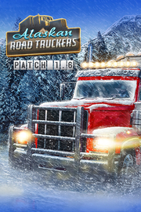

Alaskan Road Truckers
Detalles
|  | |
| Tiempo de juego | No Jugado |
| Última actividad | Nunca |
| Añadido | 1/9/2025 14:47:44 |
| Modificado | 2/5/2025 0:36:23 |
| Estado de finalización | Not Played |
| Librería | Playnite |
| Fuente | 1 TB EXT |
| Plataforma | PC (Windows) |
| Fecha de lanzamiento | 10/18/2023 |
| Puntuación de la Comunidad | 63 |
| Puntuación de la Crítica | |
| Puntuación de usuario | |
| Género | Acción Aventura Carreras Casual Indie Simuladores |
| Desarrollador | Road Studio S.A. |
| Editor | Green Man Gaming Publishing Movie Games S.A. |
| Característica | Compat. Parcial Con Mando Cromos De Logros De Préstamo Familiar Un Jugador |
| Enlaces | Punto de encuentro Discusiones Guías Noticias Página de la tienda PCGamingWiki Logros |
| Tag | 3D Acción y aventura Ambientales Aventura Carreras Conducción Exploración Gestión Gestión de inventario Indie Mundo abierto Primera persona Realistas Relajantes Simulación Simulador de automóviles Simulador inmersivo Supervivencia Tercera persona Un jugador |
Descripción

Alaskan Truck Simulator es un juego único que se desarrolla en el despiadado entorno de Alaska. Mezcla los clásicos simuladores con elementos del género survival. Abróchate el cinturón, ¡estamos a punto de emprender una verdadera aventura adecuada!
SIMULADOR

¿Qué se te viene a la mente cuando piensas en Alaska? Lo más probable es que sean imponentes montañas y duros inviernos. Alaska es un lugar único para explorar. ¿Y cómo mejor que conduciendo un camión por todo el estado? Experimenta la imprevisibilidad de los cambios de estación y descubre cómo infuye en el estado de tu camión y en ti como camionero.
TRABAJO

Deambular sin rumbo por Alaska sería todo un sueño. Pero seamos realistas, necesitas dinero para repostar tu camión y alimentarte.
Comienza tu viaje repartiendo carga. A medida que avances en tu carrera, tendrás acceso a mejores camiones o equipos, y también podrás aceptar misiones que impliquen un mayor desafío. Conduce siempre con precaución, ya que puedes perder tu carga o estropear tu camión, y acabar arruinado.
SURVIVAL

¿Listo para un poco de adrenalina?
Juegas como un camionero, ¡no como un camión! Eres una persona real detrás del volante. Explora las necesidades básicas del hombre y de la máquina. Tendrás que prestar atención a la gestión de las estadísticas y al estado de tu vehículo. Puede que te venza el hambre o el cansancio, por lo que necesitas comer y dormir. Tu camión también necesita mantenimiento: repostar, cambiar el aceite, ponerle cadenas en invierno. ¡Presta atención a todas las dificultades que puedas encontrar en la carretera!
Entre las numerosas características:
- Sistema meteorológico dinámico con cambio de estaciones y ciclo día/noche
- Un vasto mapa interactivo para que el jugador pueda explorar a pie o sobre ruedas
- Progresión de carrera
- Sistema de supervivencia
- Conocimientos útiles para conseguir y misterios que descubrir
- Mejora y repara tu camión
- Múltiples carreteras, rutas y páramos que conquistar mientras conduces